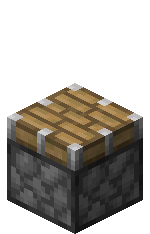
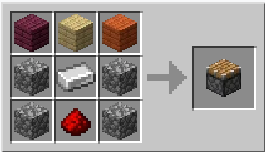

How piston work
A piston is a block capable of pushing most entities and blocks when given a redstone signal.
A piston is a block capable of pushing most entities and blocks when given a redstone signal.
Some blocks cannot be moved, break when pushed or have other interactions with pistons.
A piston can move up to twelve blocks at once.

Crafting
| Name | Ingrediants | Crafting recipe |
|---|---|---|
| Piston | Any Planks + Cobblestone + Iron Ingot + Redstone Dust |
 |
Usage
Pistons are always placed facing toward the player. When powered, the piston's wooden surface (the "head") starts extending immediately in Java Edition; or either 2 game ticks (1 redstone tick; 0.1 seconds) later or immediately, depending on how it was powered, in Bedrock Edition. When it extends, it pushes at most 12 blocks. The piston makes a sound that can be heard within a 31×31×31 cube centered on the activating piston. Any entities in the path of the extending head are pushed with the blocks. If there is no place for the entities to go, the block pushes inside them, suffocating mobs if the block is not transparent when pushed into the eye height of the mob.
When a piston loses power, its head retracts. Like extending, this retraction starts immediately in Java Edition; or, depending on how it was powered, after 1 tick in Bedrock Edition. It finishes retracting 2 game ticks (1 redstone tick; 0.1 seconds) after it starts. A sticky piston also pulls the block attached to its head, but not any of the other blocks it may have pushed.
Sticky pistons stick to a block only when retracting, so a block next to the piston head can be pushed aside by another piston and sticky pistons cannot hold falling blocks horizontally against gravity. In Java Edition, pistons finish extending early and start retracting if given a pulse shorter than 3 game ticks (1.5 redstone ticks; 0.15 seconds). These shorter pulses cause sticky pistons to "drop" their block, leaving it behind when trying to push it with a short pulse. Also, this causes the block to end up in its final position earlier. However, if they receive a short pulse and don't have a block to be pushed, they pull the block which is 1 block away.
A piston that pushes a slime block bounces any entity that it displaces in the direction the piston is facing. In addition, when a slime block is moved by a piston, any movable blocks adjacent (not diagonally) to the slime block also moves. See the "Slime blocks" section below for more details.